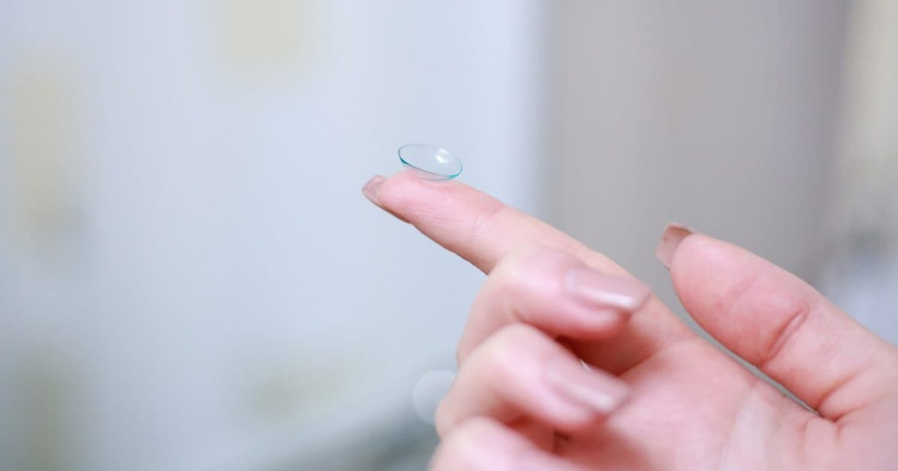
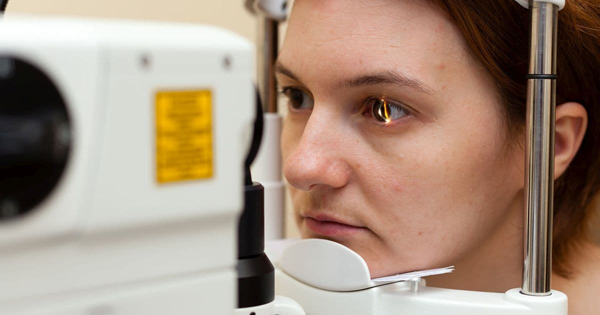

Lentile de contact
Cabinetul de oftalmologie oferă servicii medicale incepand cu lentile de contact, ochelari, diverse alte afecțiuni sau „boli de ochi”. Inclusiv intervenții chirurgicale de mare complexitate, respectiv cataracta si glaucom. Mai jos aveți o enumerare a acestora, fără însă ca această listă să fie exhaustivă.
Retinopatia diabetică
Afectarea oftalmologica în diabet se manifestă:
- la nivelul cristalinului (cataractă diabetică)
- la nivelul nervilor (oculomotori – pareze, senzitivi – nevralgii, ulcere trofice corneene, senzoriali – neuropatii optice)
- sau la nivel retinian (retinopatia diabetica).
Aceasta din urmă este rezultatul alterării vaselor de sânge mici care are ca rezultat ischemia (lipsa de oxigen) şi formarea altora mai fragile (neovase). Aceasta este sursă de hemoragii, glaucom neovascular şi alte complicaţii cu efect dezastruos asupra vederii.

Tratamentul retinopatiei diabetice constă în fotocoagularea laser cu distrugerea neovaselor înainte de a fi survenit complicaţii majore. Înțelegem astfel importanta urmăririi prin controale periodice oftalmologice a unui pacient diabetic. După examinare medicul oftalmolog sa poată indica momentul potrivit pentru tratamentul laser.
Mai multe despre retinopatia diabetică
Sindromul de ochi uscat
Lacrimile au rolul atât de a proteja mecanic suprafața oculara cat şi de a facilita transferul oxigenului din aer înspre ochi (cornee). O cantitate sau calitate necorespunzătoare a lacrimilor poate perturba aceste funcții cu consecinţe variate. Afecţiunile pot fi minore (jenă, uscăciune, senzaţie de nisip în ochi) până la cele majore (ulceraţii corneene).
Tratamentul este de supleere cu lacrimile artificiale recomandate de medic in funcție de tipul de dislacrimie. Se are în vedere faza apoasă, lipidica sau mucoasa filmului lacrimal.
Lentile de contact
Lentilele de contact reprezintă o alternativa la corectarea cu ochelari a viciilor de refracţie (miopie, hipermetropie, astigmatism). Dacă în ceea ce privește miopia şi hipermetropia nu există, practic, limite, astigmatismul poate fi corectat cu rezultate bune doar in limitele a 2-2,5 dioptrii cilindrice.
Exista o gama larga de tipuri de lentile de contact de la cele de unica folosință pana la cele mensuale (care se poarta o lună continuu sau în perioada de veghe). Aceste diferente sunt determinate, în cea mai mare măsura de materialul din care sunt făcute lentilele. Poate cea mai importantă caracteriostica a unei lentile de contact este permeabilitatea acesteia la oxigen.
Acest material este biologic inert, așa ca nu se poate vorbi despre alergii sau intoleranţă la lentile de contact (cu excepția situaţiilor în care exista boli ale suprafetei oculare); în cele mai multe din cazurile de alergie, cauza trebuie căutată în ă parte (de ex. soluția de întreținere).
În funcție de necesităţile şi particularitățile ochilor dvs., medicul oftalmolog şi opticianul dvs. va vor recomanda ce fel de lentile de contact aveti nevoie.
Oftalmopediatria
În cazul noilor născuți prematur controlul oftalmologic se va face în zilele imediat următoare nasterii prin oftalmoscopie indirecta după un protocol dictat de gradul prematuritatii pentru a se depista si trata laser o eventuala retinopatie a prematurităţii.
În cazul copiilor născuți la termen, in perioada imediat următoare nasterii poate sa apară o lacrimare suparatoare la unul sau ambii ochi însoțita sau nu de fenomene infectioase (secreții, roseata). Acesta este un semn de imperforaţie a canalului lacrimonazal. Medicul oftalmolog vă va recomanda un tratament conservator (picături) sau va decide momentul optim pentru sondajul cailor lacrimale.
Următorul moment important in dezvoltarea vederii micutilor este apariția si dezvoltarea vederii binoculare in jurul vârstei de 2,5-3 ani. Este un moment foarte delicat care nu trebuie in nici un caz trecut cu vederea, căci orice disfunctie in acest proces poate avea consecinte ireversibile (ambliopie, strabism).
În aceste cazuri, medicul oftalmolog va recomanda tratamentul optic (ochelari), ortoptic (ocluzie, exercitii etc.) si chiar chirurgical.